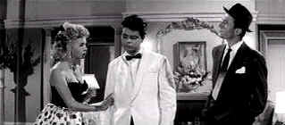

| Expresso Bongo/B+, B+ |
| Kino/1959/105/ANA 2.35 |
Perfectly bridging the
breezy fifties era of Ealing Studios hilarity and the angry man
sixties films that defined new British cinema, Expresso Bongo is
a charming comedy.
Johnny Jackson is a hungry fringe talent agent
scrambling to keep himself in coffee and scones. Johnny survives on
charged energetic street charm. The former band drummer is a fighter with
swaggering optimism. Johnny seems convinced that he will somehow
succeed in this tawdry world he knows so well. Jackson uses people with zestful
amorality. His live-in stripper girl friend can't sing a lick and has
all the stage presence of a dead parrot but Johnny promises her a chance
for an acting future. Ever on the lookout for a breakthrough, Jackson
spots a singer with a new look at a local teen hangout. Playing the
bongo drums and swiveling his hips, Teenage Bert Rudge is dubbed Bongo
Herbert by Johnny who proceeds to chart the future for his find.
 |
| Picking over Bongo's bones. ©Kino |
There's a hint of flavor of old MGM musicals
buried under the edgy energy. Johnny Jackson's relationship to record
company owner Mayer is a slightly twisted version of the similar
roles in some of the grand MGM musicals. Many years later, in Absolute Beginners,
director Julien Temple seems to have borrowed heavily from Expresso
Bongo for the pop musical failure.
Expresso Bongo is the film that jump started
Laurence Harvey's career. Harvey's Johnny Jackson is a character unlike
anything Harvey ever did before or after. The sizzling energy, goofy
charm, and transparent street smarts make Johnny Jackson a character
worthy of building a movie around.
Harvey's totally eccentric energetic performance is a wonder Coupled
with the excellent Room at the Top the following year, Harvey's career
became strictly A-list. Rock and Roll singer Cliff Richard is barely adequate as Bongo Herbert.
Even his smile is stiffer than a billboard advertising tooth
paste. But the players around him prop him up and make him seem more real.
Expresso Bongo provides a rich viewing
experience with its combination of sleazy energy and fading innocence.
Val Guest's neat direction and a tight script from Wolf Mankowitz trim
off the fat to deliver a leanly entertaining slice of comic life.
One of the best efforts from Kino, hopefully
the anamorphic well-transferred DVD of Expresso Bongo bodes well for future
art house releases. Resolution consistently extracts maximum detail from
the source material. There are a few scratches and dirt patches on the
transfer elements, however, overall, they are in very good condition.
Black are excellent with fine contrast range. The mono soundtrack
has no hiss and delivers clean dialogue.

The Movie Poster Archive includes extensive poster images from the films of stars like Susan Hayward, Kirk Douglas, Katharine Hepburn and many more. Our featured star is Danny Kaye.

Charade/A,B

Successfully combining romantic comedy and suspense is no small
achievement. Charade does it with panache.
 Feature Archive
include articles on
Akira Kurosawa, Frank
Darabont, Blonde
Bimbos, Hollywood
Street Gangs, or Vietnam:
The Hollywood Pariah, and many more....
Feature Archive
include articles on
Akira Kurosawa, Frank
Darabont, Blonde
Bimbos, Hollywood
Street Gangs, or Vietnam:
The Hollywood Pariah, and many more....
The 1939 Vintage

Was it the best year ever for great
films? Click on the bottle for more.


European film portal and hard to find video store.

The Cinema Laser
A home grown magazine for laserphiles that has been publishing for a
number of years and has embraced DVD in a big way. Lots of helpful
information.

Doug Pratt's been doing almost longer than anyone in the business,
reviewing laser discs, that is, and now DVDs too. The venerable
Laserdisc Newsletter has been publishing since 1984. Pratt probably has
a large enough stock of laser discs in his house to build a DVD-proof
bomb shelter. Check out his on-line reviews at DVDlaser.com.